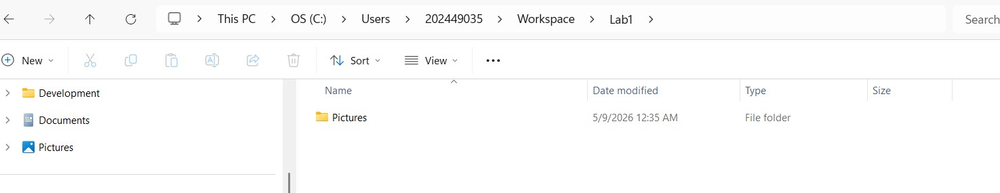
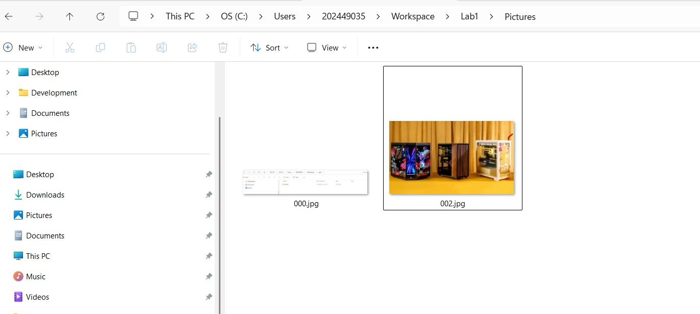
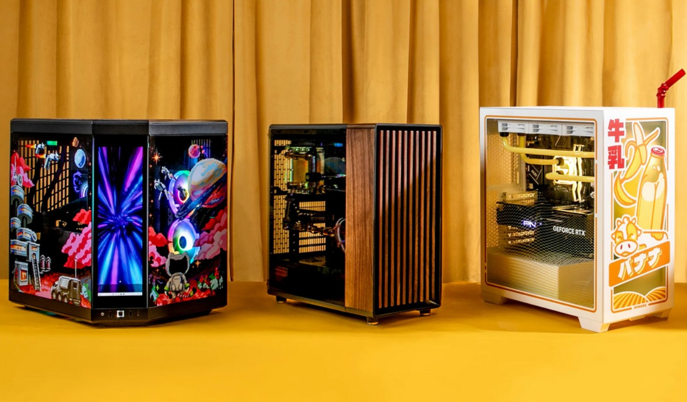
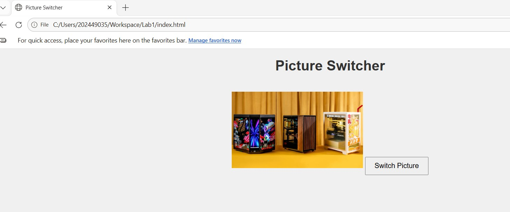
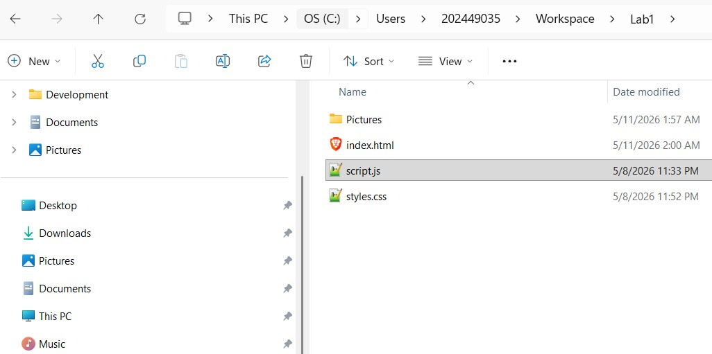
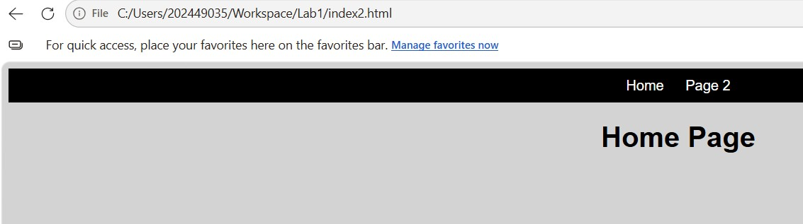
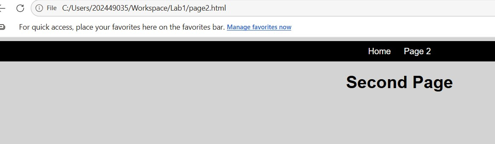
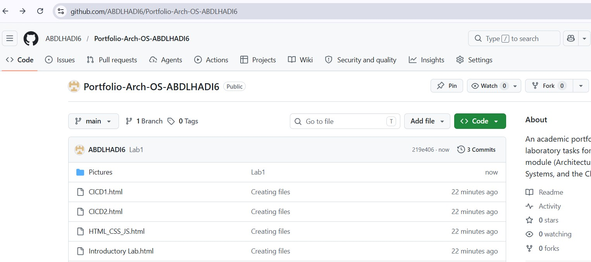

Lab Overview
In this introductory lab, I learned how to use the Computer Science Workspace—a local folder on the lab machines that avoids the sync issues OneDrive has with IDEs and game engines. I practiced taking effective screenshots, managing file structures, and building a basic functional website from scratch.
1. Creating local Workspace
We accessed the local Workspace by navigating through the C drive to our user profile, using it as a secure storage location for project files. Inside the Workspace, we created a new folder named Lab1, and within that, we created another folder called Pictures to store the images used later in the lab.

2. Capturing and Saving Screenshots
We used the Windows screenshot tool to capture an image from the internet and pasted it onto the picture of the three PCs using Paint. After adjusting the image, it was saved as a PNG file named 001 inside the Pictures folder.

3. Creating and Saving a Hand-Drawn Image
We created a new drawing in Paint based on the edited image from the previous task. The drawing was then saved as a PNG file named 002 inside the Pictures folder.

4. Creating the First Website
We built an index.html file in Visual Studio Code. The website displayed an image switcher that toggled between two pictures—one of which was our hand-drawn 002.png—when a button was clicked. This combined structure, style, and behavior into a working web page.


5. Implementing Multiple Pages and Navigation
We added multiple HTML pages to the website and linked them together using anchor tags. A simple navigation bar was created to allow easy movement between the different sections of the portfolio.


6. Pushing the Project to GitHub
Finally, we uploaded the Lab1 project folder to GitHub to back up the work and enable version control, ensuring the project is accessible and managed online.
